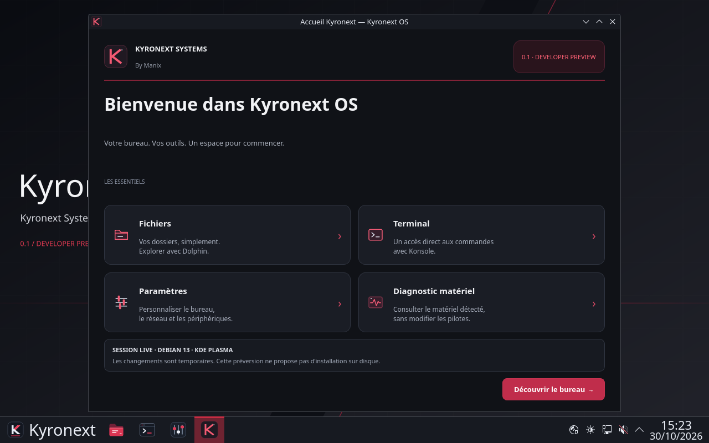

Un bureau utilisable
Gestionnaire de fichiers Dolphin, terminal Konsole, paramètres KDE, réseau et commandes d’arrêt : des composants Linux éprouvés, réunis dans une première image ISO.
KYRONEXT SYSTEMS — BY MANIX
PREMI?RE MONDIALE ? 0.1 DEVELOPER PREVIEW
Kyronext OS fait ses premiers tours de roue : une distribution Linux qui démarre réellement, avec un bureau KDE Plasma et une identité graphite et rouge personnalisable.
Lecture facultative avec une voix proposée par votre navigateur.

01 / CE QUI EXISTE
Gestionnaire de fichiers Dolphin, terminal Konsole, paramètres KDE, réseau et commandes d’arrêt : des composants Linux éprouvés, réunis dans une première image ISO.
Fond original, palette graphite et rouge, accueil Kyronext et panneau de lancement. Le bureau reste configurable dans les paramètres de KDE ; les animations peuvent être désactivées.
Le Live permet d’explorer le système sans l’installer. Le diagnostic matériel local aide à examiner les périphériques ; il ne garantit pas à lui seul leur compatibilité.
02 / L’INSPIRATION
Notre passion pour les ordinateurs de bord des années 1980 nourrit cette création. Le nom officiel reste Kyronext OS : ce projet indépendant n’est ni un produit officiel Knight Rider, ni affilié à ses ayants droit.
Un thème personnel ne change pas les droits sur les marques, voitures, images, sons ou voix de tiers. Les éléments inspirés de la série présents dans les essais privés ne sont pas proposés ici au téléchargement public. L’interface et les créations originales Kyronext gardent leur propre identité.
03 / ESSAYER EN CONNAISSANCE DE CAUSE
La première ISO publique est disponible : 1,63 Go, avec le bureau KDE et l’identité originale Kyronext. Cette révision a atteint le bureau en BIOS dans QEMU et en UEFI dans VirtualBox. Ces essais ne certifient aucun ordinateur physique.
Cette édition publique ne contient pas les illustrations KITT/KARR des essais personnels. Le bureau reste personnalisable dans KDE.
Révision publique : 20261030T143045Z-branding-final · 1 634 861 056 octets.
SHA-256 : 91d8238d4eb33686b9674981dabf828fafb97f8e9d4d2319b019486e59508c85
Pour créer une clé Live, sélectionnez cette ISO dans votre outil USB. L’écriture efface la clé choisie ; vérifiez le périphérique. Aucun installateur sur disque n’est actif.
04 / LA SUITE
Étendre les tests matériels de cette première édition publique, étudier un bureau léger et un installateur validé. Le Cockpit et l’assistant IA local restent des évolutions prévues : ils ne sont pas annoncés comme opérationnels.